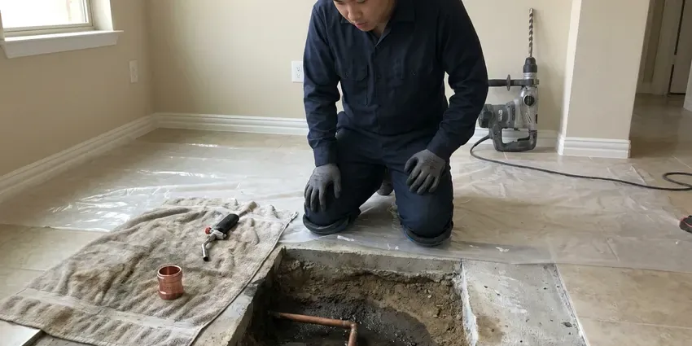

Trenchless Pipe Repair in Rutland, VT
Facing a damaged underground pipe in Rutland, VT? Our trenchless pipe repair services offer a less invasive solution, protecting your yard and landscaping.
- Skilled Plumbers
- No Major Digging
- Fast Trenchless Assessments
- Fast, Efficient Repair

Get a New Pipe Inside the Old One With Trenchless Repair in Rutland, VT.
We show you before and after video so you can see the finished pipe for yourself.
Your Go-To for Trenchless Pipe Repair in Rutland, VT
CKV Plumbing repairs damaged underground pipes without digging a long trench across your property. With cured-in-place pipe lining, we insert a resin-saturated liner that hardens inside the old pipe. With pipe bursting, we pull a new HDPE pipe through the old one while breaking it apart.
Our expertise includes:
- Cured-in-Place Pipe (CIPP) Lining
- Cured-in-place pipe (CIPP) lining installation
- Pre-lining hydro-jetting and post-install camera verification

Additional Plumbing Repair Services in Rutland, VT
We offer expert plumbing repair services across Rutland, VT to stop leaks, clear blockages, and keep every fixture working the way it should.


Customers
Why Choose CKV Plumbing for Trenchless Pipe Repair in Rutland, VT?
Choosing CKV Plumbing for your trenchless pipe repair means choosing a team committed to quality and limiting disruption. We know the challenges of Rutland properties and provide solutions built to last.
- Less Digging, Small access points replace long trenches across your yard.
- Minimal Disruption, Trenchless repair methods preserve your landscaping, driveways, and foundations, unlike traditional excavation.
- Durable Solutions, The new pipes are often more resistant to everyday issues like root intrusion and corrosion than the original pipes.
Citywide Coverage
No matter where you are in Rutland, our skilled technicians are equipped to provide prompt and efficient trenchless pipe repair services, getting your plumbing system back in top condition fast.
Experienced Team
Our trenchless technicians are trained on lining and bursting equipment and follow manufacturer installation standards. They have renewed thousands of feet of pipe.
Safety-First Approach
We put a priority on the safety of your property and our team during trenchless pipe repair. All work is conducted with proper safety protocols and in full compliance with Vermont plumbing regulations.
Trusted Certified Rutland Plumbing Services Professionals
At CKV Plumbing, we take pride in providing certified plumbing services throughout Rutland, VT. Backed by leading industry credentials, our experienced plumbers combine technical skill with genuine customer care. Whether it is repair, installation, or maintenance, we follow strict safety and quality standards to deliver lasting results you can trust.
Call Us Now PHCC Plumbing Contractor Recognition
PHCC Plumbing Contractor Recognition Better Business Bureau (BBB) Accreditation
Better Business Bureau (BBB) Accreditation Angi Certified Pro
Angi Certified Pro ISO 9001 Quality Management Certification
ISO 9001 Quality Management CertificationNo-Dig Trenchless Pipe Repair Services in Rutland, VT
Emergency Trenchless Pipe Repair in Rutland, VT
A sudden pipe failure can be a major emergency, especially during severe weather. Heating systems, boilers and water heaters run hard through the winter, so annual service helps prevent breakdowns in the coldest weeks. CKV Plumbing offers emergency trenchless pipe repair services in Rutland, VT to promptly address urgent issues like burst pipes or major leaks. Our team is ready to respond and limit damage efficiently, restoring your plumbing system as quickly as possible.

Commercial Trenchless Pipe Repair in Rutland
Commercial properties often have sewer and storm lines under parking lots, sidewalks and buildings. Trenchless repair avoids costly concrete demolition and disruption to tenants and customers. We line larger diameter pipes and multiple laterals. We schedule work to minimize impact on business operations.
Perma-Liner and Picote Solutions in Rutland
We use industry-leading brands like Perma-Liner and Picote for our trenchless pipe repair projects. Perma-Liner offers robust CIPP lining systems known for their durability and versatility, capable of addressing many pipe sizes and conditions. Picote tools provide precision pipe cleaning and cutting, important for preparing pipes for lining or bursting. These tools and materials make our repairs not only minimally invasive but also of the highest quality and longevity for homes in Rutland.
Sectional Point Repair in Rutland
When damage is confined to a specific section of pipe, sectional point repair is an ideal trenchless solution. We target only the damaged area, installing a patch or liner to seal the leak or reinforce the pipe. This method is cost-effective and minimizes the scope of work, which suits isolated issues in Rutland without affecting the entire line.
Commercial Trenchless Solutions in Rutland
Commercial properties in Rutland often have complex underground piping systems and critical operational needs. Our trenchless pipe repair services provide a fast, less disruptive way to address plumbing issues in businesses, schools, and other commercial buildings. We work to minimize downtime so your operations continue smoothly.
Lateral and Spot Lining in Rutland
Not every pipe needs to be lined end to end. When damage is limited to a few joints or a short section, we can install a short sectional liner. This costs less than a full-length liner and is completed quickly. We verify the rest of the line is sound before recommending a spot liner.
Cured-in-Place Pipe Lining in Rutland
CIPP lining involves cleaning the old pipe, then inserting a flexible liner saturated with epoxy resin. The liner is inflated against the pipe wall and cured with hot water, steam or UV light. Once hardened, it forms a smooth, jointless pipe inside the old one. Lining works best for cracks, root intrusion and separated joints.

Residential Trenchless Pipe Repair in Rutland, VT
CKV Plumbing specializes in trenchless pipe repair for residential properties throughout Rutland, VT. We understand that homeowners want efficient solutions that protect their landscaping and property value. Our methods are designed to restore your home's plumbing system with minimal disruption, whether it's a sewer line, water line, or drain pipe.
Trenchless Pipe Repair Near Me in Rutland, VT
If you are searching for trenchless pipe repair near me, you want to fix a pipe without wrecking your yard. Our local trenchless crews can inspect your line and tell you if lining or bursting is a good fit. We give you a clear price.
Looking for 'trenchless pipe repair near me' in Rutland? CKV Plumbing is your local expert, providing fast and professional services across the area. We know the soil conditions and foundation types common in Vermont that can affect underground pipes, and we offer tailored solutions.
CKV Plumbing at a Glance
- Fully licensed plumbing team covering Rutland, VT
- 24/7 emergency service with same-day scheduling
- Clear written estimates, no hidden fees
- 4.8-star rated by 553+ Vermont customers
Rutland Map
Rutland Information
- Population
- 15,630
- Area codes
- Local
- Service area
- Rutland and communities within 40 miles
- Nearby
- Middlebury, Barre, Montpelier, Bennington
Trenchless pipe repair is especially valuable for homes in Rutland, VT, where traditional excavation can be disruptive and costly, so minimal-dig solutions help property owners.
Expert Services
Trust our professionals for reliable CKV Plumbing solutions in Rutland, VT.
Our Specialized Plumbing Services in Rutland, VT
At CKV Plumbing, we provide a complete range of plumbing services across Rutland, VT. From leak detection to full system installations, our team ensures fast, precise, and affordable service for both residential and commercial properties. Explore our core services below:


How Our Trenchless Pipe Repair Process Works in Rutland, VT
At CKV Plumbing, we follow a clear, step-by-step process for all trenchless pipe repairs in Rutland, from initial assessment to final inspection.
Request a Quote
Call (802) 209-5139 and tell us about the backups, leaks or root problems you are having. We schedule a camera inspection.
Inspect and Clean
We camera the line, then hydro-jet it clean to prepare for lining or bursting. You get a written quote for the trenchless repair.
Line or Burst
We install the liner or new pipe through small access points. We camera the finished line and restore any access areas.
Frequently Asked Questions About Trenchless Pipe Repair in Rutland
CIPP lining typically costs $80 to $250 per foot, and pipe bursting often runs $60 to $200 per foot plus access pits. A typical residential sewer line usually totals $4,000 to $15,000 depending on length and condition.
Yes, in most cases, trenchless pipe repair that involves repairing or replacing underground sewer or water lines requires a plumbing permit from the city. Plumbing in Vermont follows state plumbing rules based on a national model code with state amendments, and the state licenses plumbers. CKV Plumbing handles all necessary permit applications and makes sure all work complies with local codes and regulations.
Trenchless pipe repairs, especially CIPP lining and pipe bursting using materials like epoxy resins and HDPE pipe, are designed to last for 50 years or more. These materials are highly resistant to corrosion, root intrusion, and chemical breakdown, offering a very durable solution.
CIPP (cured-in-place pipe) lining involves inserting a new liner inside the existing pipe to create a pipe within a pipe. Pipe bursting, on the other hand, involves breaking apart the old pipe while pulling a new pipe into its place, resulting in a completely new pipe.
CKV Plumbing uses trusted, industry-leading brands for our trenchless pipe repair equipment and materials, such as Perma-Liner and Picote. We choose brands known for their durability, effectiveness, and proven track record in providing long-lasting pipe repair solutions.
Yes. Our trenchless repairs carry a written warranty, and liners and pipe carry manufacturer warranties. We go over coverage before the job starts.
No, trenchless pipe repair is designed to be minimally invasive and much cleaner than traditional excavation. It typically requires only one or two small access points, reducing the mess, disruption, and restoration work associated with digging large trenches across your property.
Many cities require a permit for sewer line replacement, including trenchless work. We check local requirements and pull permits when needed.
What People Are Saying About Our Plumbing Experts?

Patricia H.
We had a slab leak that two other companies could not find. CKV Plumbing located it in under an hour, explained our options, and the price matched the quote to the dollar.
Slab Leak Repair · Middlebury, VT
Emily R.
I called CKV Plumbing for plumbing repair, and the technician was fast, polite, and thorough. They explained the problem clearly and fixed it the same day. I will definitely hire them again. Highly recommended!
Plumbing Repair · Rutland, VT
James P.
Our commercial plumbing system had a leak under the sink, and CKV Plumbing handled it professionally. The plumbers arrived quickly and restored everything without disruption to our customers.
Commercial Plumbing · Barre, VT
Sofia M.
Two new toilets installed in one visit, no mess left behind, and the tech even adjusted a faucet he noticed was dripping. Fair pricing and really friendly.
Toilet Installation · Brattleboro, VT
Mark T.
When our office needed drain cleaning, CKV Plumbing provided quick, reliable service. The plumber arrived on time and made sure every drain flowed perfectly before leaving. Very satisfied.
Drain Cleaning · Barre, VT
Daniel K.
A pipe burst at 11 pm and they actually answered. The plumber showed up within the hour, shut everything down, and had us back to normal the next morning. Could not ask for more.
Emergency Plumbing · Barre, VT